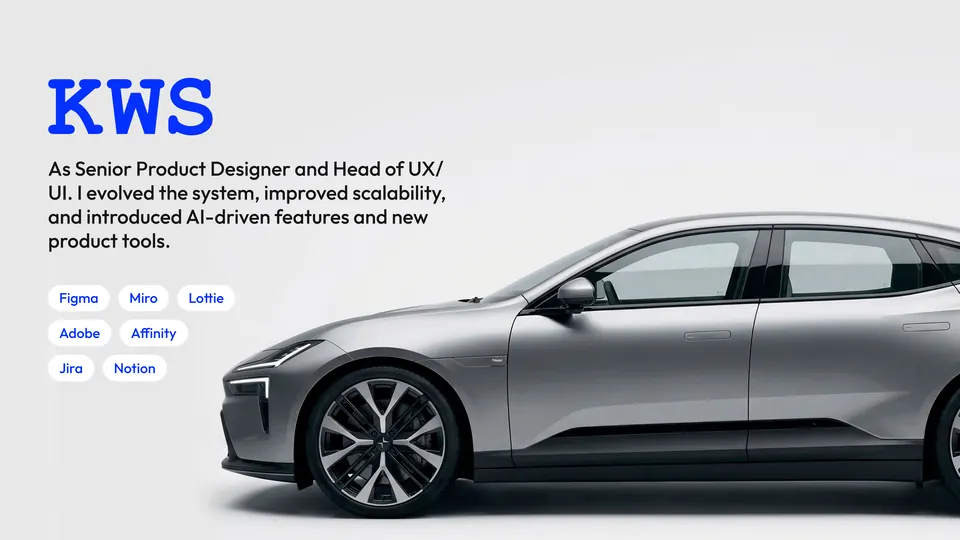
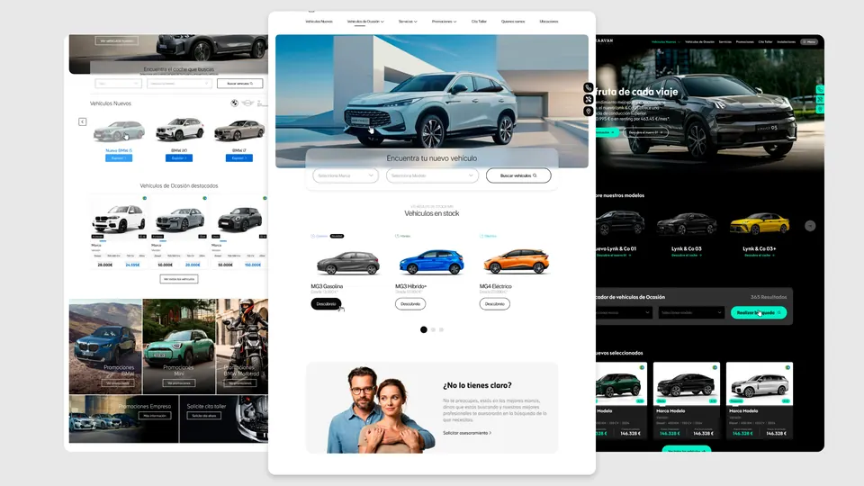
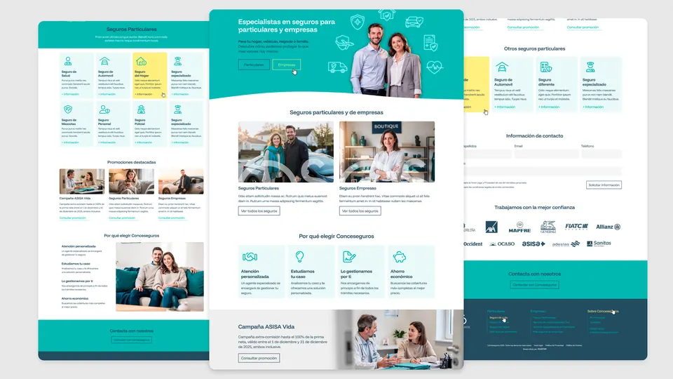

01 — Diseño de producto · SaaS
Kaavan KWS
KWS es la plataforma SaaS de Kaavan para crear webs de concesionarios de coches a partir de bloques, vistas y componentes. Llevo más de dos años como su diseñador principal —heredé su sistema de diseño y después lo escalé y reconstruí en gran parte— y hoy soy el único diseñador de la empresa.

Resumen
KWS permite a concesionarios oficiales y grupos de concesionarios crear y gestionar webs completas desde un único sistema compartido: bloques formados por vistas, que a su vez se forman con componentes. Los clientes pueden crear sus propios bloques, secciones y páginas sin que un desarrollador tenga que tocar cada web nueva, y una capa de importación, exportación y gestión mantiene fluyendo los datos de cada concesionario.
Cuando entré en Kaavan, en 2023, la plataforma ya funcionaba bien, con un sistema de diseño heredado del diseñador anterior. Con el tiempo asumí su propiedad completa: lo escalé, lo reestructuré y reconstruí buena parte de sus componentes y variables. Hoy soy el único diseñador de la empresa y cubro el producto, las plantillas de clientes y, cuando hace falta, logotipos e identidad corporativa.
Reto
- 01Un único sistema tenía que servir a clientes muy distintos —desde concesionarios de una sola marca que siguen las guías oficiales del fabricante hasta grupos multimarca con identidad propia— sin fragmentarse.
- 02Los datos de los concesionarios son variables y flexibles: la longitud de los textos, las imágenes y los campos cambian con cada importación, así que ningún layout puede asumir un contenido fijo.
- 03Cada vista o bloque nuevo debe diseñarse y probarse con contenido real antes de lanzarse, lo que hace que el crecimiento sea lento y delicado.
- 04Se estaban incorporando funciones con IA y hacía falta una base de diseño capaz de absorberlas sin una reconstrucción ni alterar a los equipos que ya usaban la plataforma.
Proceso
Para cada plantilla de cliente suelo dirigir yo mismo el kickoff, para entender qué debe conseguir la web: una web corporativa de grupo, basada en la presencia y las marcas oficiales, es un problema muy distinto al de una web orientada a ventas que tiene que convertir. Después presento los diseños al responsable de marketing del cliente, respondo a sus preguntas y recojo su feedback, que traduzco en requisitos para el desarrollo front-end y el sistema de importación. Los clientes a menudo no saben exactamente qué necesitan, así que parte del trabajo es guiarlos hacia lo que la experiencia demuestra que funciona mejor.
Plantillas, página a página
Una web completa de concesionario construida con los mismos bloques: home con selector de marcas y buscador de vehículos, listados de stock, fichas de vehículo con especificaciones y financiación, y páginas de servicios con un pie de página común.

El mismo sistema, marcas distintas
Los mismos bloques, vistas y componentes reinterpretados para cada concesionario —claros u oscuros, con los colores, la imagen y la tipografía oficiales de la marca—, todo sobre una retícula de 8 píxeles con estilos compartidos de color, tipografía, espaciado y sombras. Grupos con entre 20 y más de 30 marcas oficiales funcionan sobre él.

Más de 300 clientes concesionarios sobre un único sistema de diseño.
Preparado para flexionar
Más allá del layout estándar: mapas de red de concesionarios por región, noticias, cifras destacadas y buscador de vehículos, adaptados a paletas de marca mucho más atrevidas sin salir del sistema. Los layouts absorben funciones con IA y contenido importado cuya longitud es imposible de predecir.

Más allá de la automoción
La misma arquitectura sostiene también webs ajenas a la automoción, como la de una correduría de seguros: tarjetas de servicios, promociones, formularios de contacto y logotipos de partners, todo reconstruido con los mismos bloques.

Solución
Un sistema de diseño preparado para seguir escalando: bloques, vistas y plantillas modulares, componentes documentados y una base que ya absorbe funciones con IA, de modo que cada concesionario obtiene una web acorde con su marca a partir de una única fuente compartida.
Decisiones clave
- 01Hacer crecer la librería con cuidado: las vistas y los bloques nuevos solo se lanzan una vez probados con contenido real y variable.
- 02Incorporar la IA a la plataforma sin romper los layouts: diseñar para longitudes de texto impredecibles en lugar de textos fijos.
Mirando atrás
Hoy dividiría la arquitectura de Figma en más archivos independientes, añadiría sistemas específicos para logotipos, iconos y tipografía, y diseñaría mobile-first en lugar de adaptar desde escritorio, dado cuánto tráfico de concesionarios llega desde móviles.
Impacto
Los nombres de clientes y las capturas de webs en producción se omiten por confidencialidad.